같은 로컬 데이터(크리에이터 12명), 로그인 전, 개발 서버에서 찍었다. 전 = 커밋 299890ea, 후 = 5ec7a9f5 + 이름·뱃지 두 줄(사용자 「A로」).
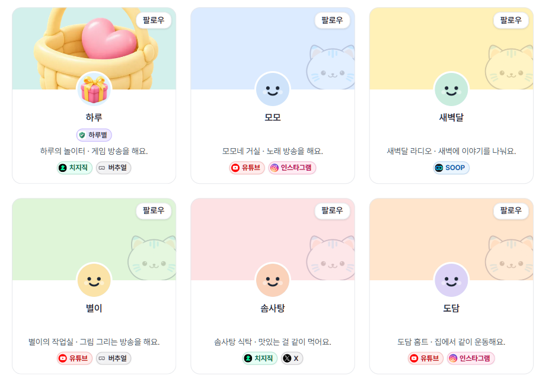
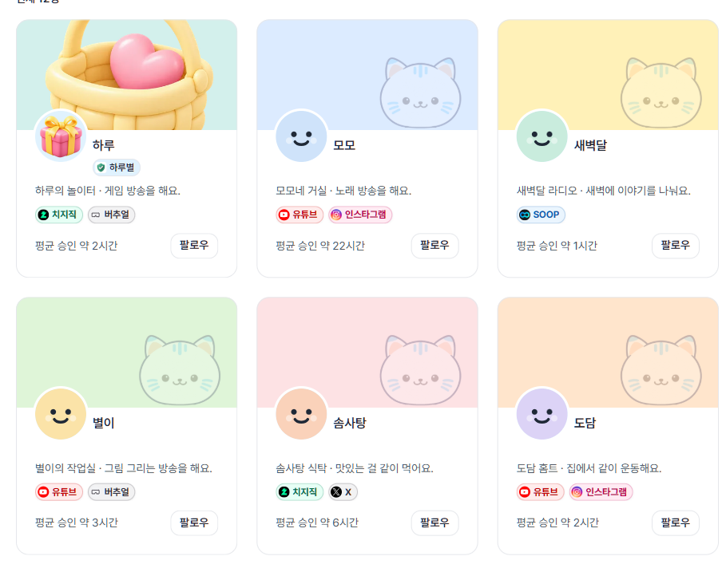
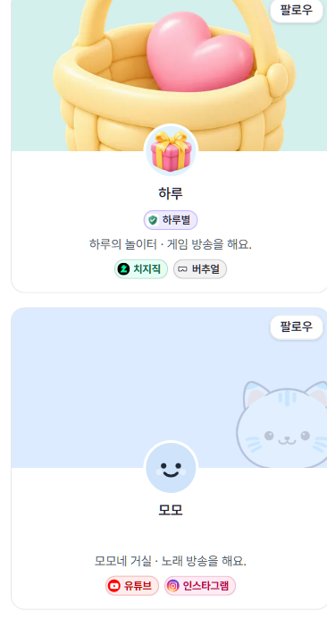
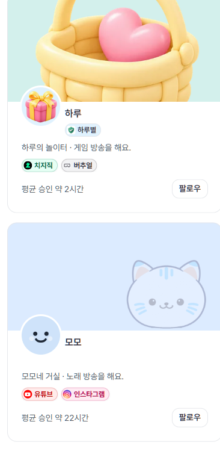
이름은 최대 20자, 팬덤 이름은 최대 10자까지 저장된다. 첫 카드에만 꽉 채운 값을 넣었다(화면에서 글자만 바꿔 찍음).
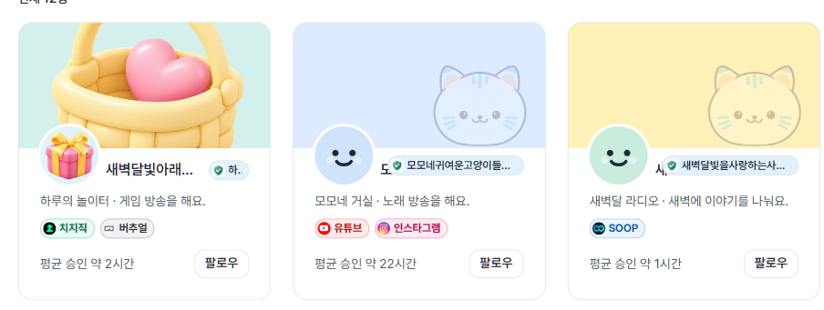
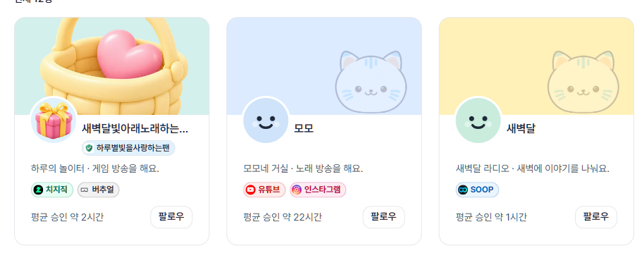
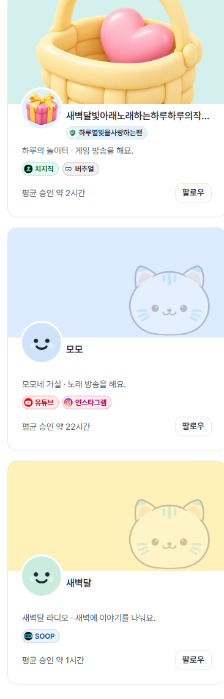
카드 높이 324 → 294(PC). 칩이 많으면 「+N」으로 줄고 버튼은 줄지 않는다 — 카드 폭 170 까지 좁혀 겹침 없음을 확인.
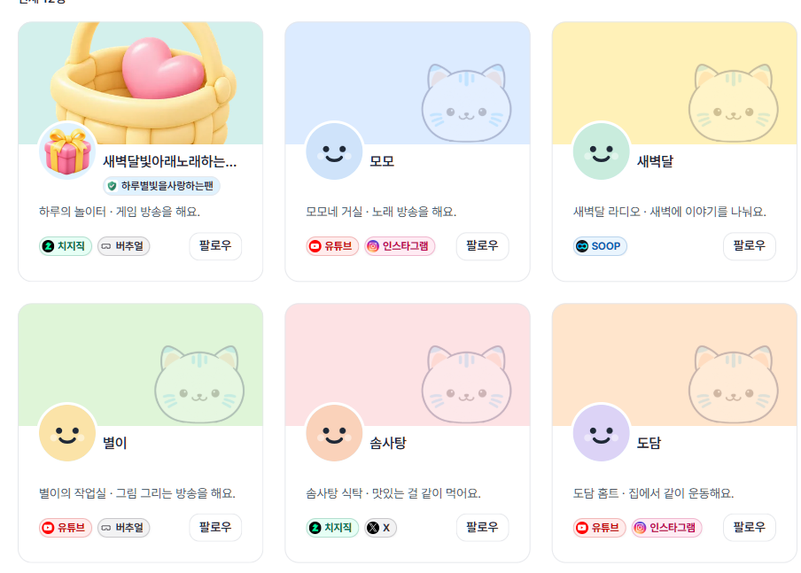
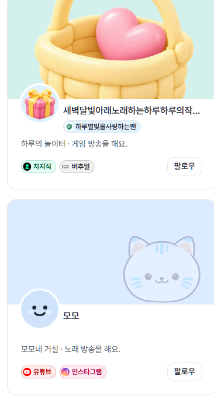
태그는 최대 5개(직접 입력 하나는 최대 20자). 남는 폭만큼 칩을 보이고 나머지는 「+N」. 소개는 두 줄 자리를 늘 잡아 카드 높이가 같다(PC 315).
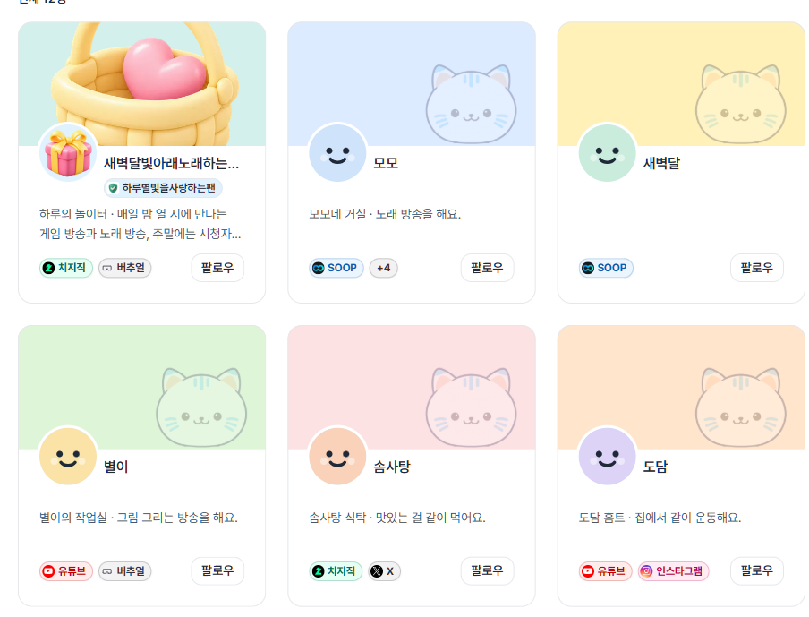
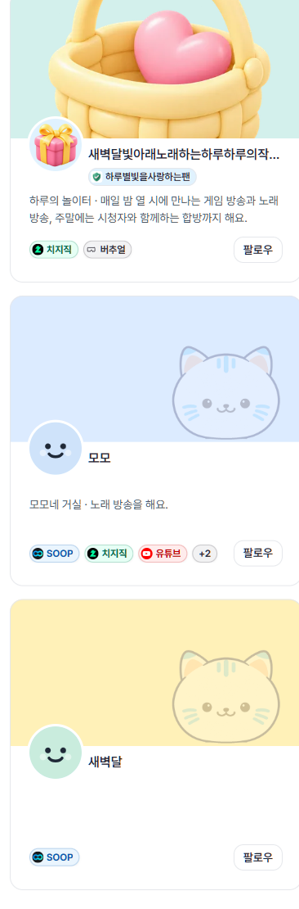
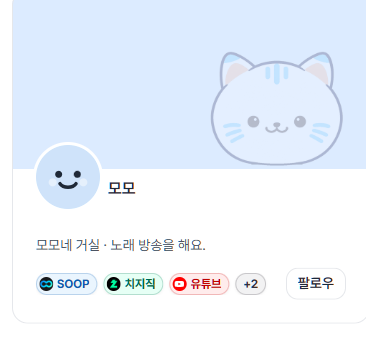
PC 칩 줄 157 → 169. 모모가 「SOOP +4」 → 「SOOP 치지직 +3」. 휴대폰은 「SOOP 치지직 유튜브 +2」 그대로.
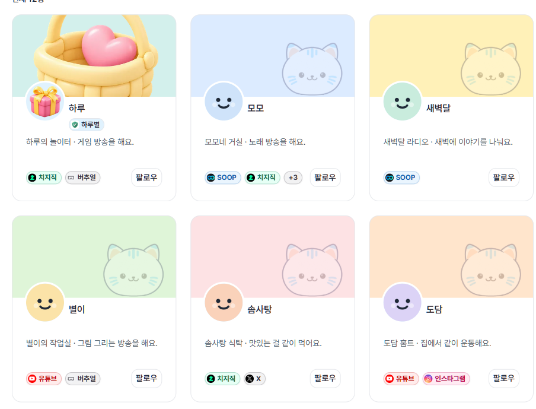
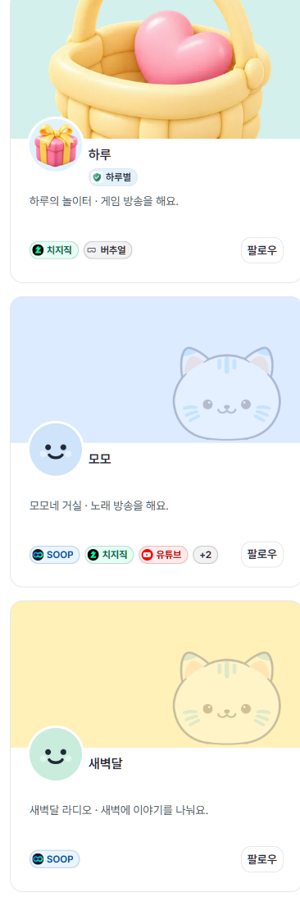
칩 줄 오른쪽의 「팔로우」를 아래 줄로 내리고 「선물 보내기」를 더했다. 두 버튼은 반반(사이 8) · 높이 44 · 바탕은 배너와 같은 색(테마 색, 없으면 크리에이터 ID 파스텔). 칩 줄 169 → 229(1024) — 모모는 「SOOP 치지직 +3」 그대로(셋째 칩까지 231 필요). 카드 높이 357(PC)·389(휴대폰), 모두 같음.
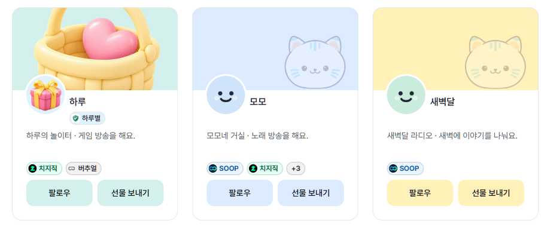
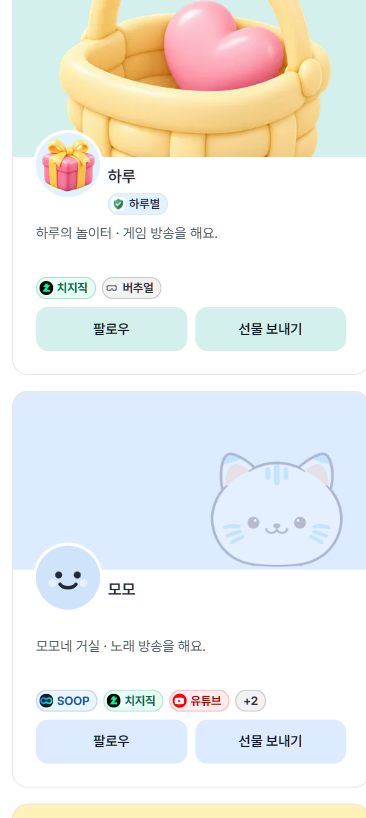
버튼 줄을 카드 맨 아래 색 띠로 분리했다(바탕 = 배너 색, 좌·우·아래 가장자리에 붙음) — 흰 몸통을 위 배너와 아래 띠가 감싼다. 「팔로우」는 글자 폭만큼(테두리), 「선물 보내기」는 흰 면으로 남은 폭 전부. 1024 에서 팔로우 68 · 선물 보내기 153, 「팔로우 중」이면 84 · 138. 카드 높이 357 → 365(PC)·389 → 397(휴대폰), 모두 같음.
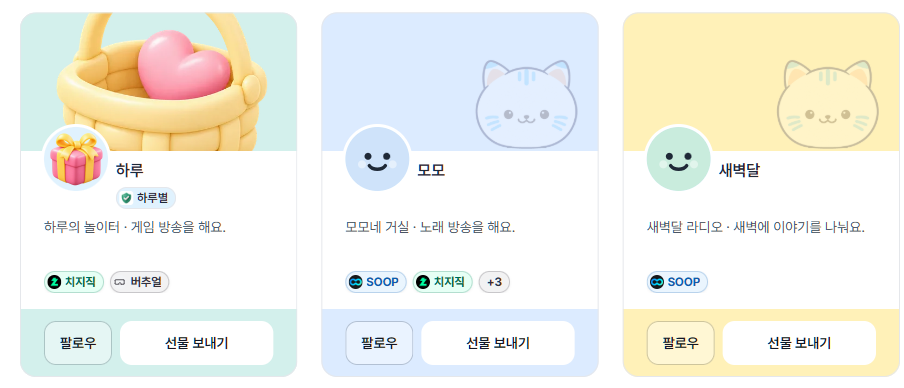
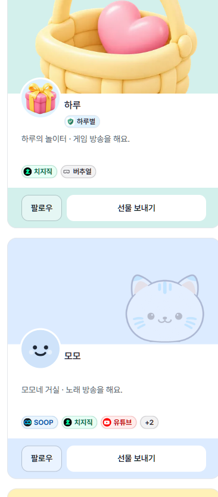
팔로우 안 함 = 「팔로우」 하나(하트 더하기, 띠 폭 전체). 팔로우 중 = 왼쪽 「선물 보내기」(선물 상자, 흰 면) + 오른쪽 「팔로우 취소」(하트 끄기, 테두리) — 2026-10-18 순서를 바꿨다. 아이콘은 lucide 0.544.0 원본 경로. 「팔로우 취소」는 늘 아이콘만(2026-10-18 「로그인 후 팔로우 취소는 아이콘만」) — 1440 로그인 화면에서 선물 보내기 177 · 팔로우 취소 44(마우스를 올리면 「팔로우 취소」). 누르면 그 자리에서 버튼 구성이 바뀌고 카드 높이는 그대로. 아래 사진은 열 수를 칸 폭으로 바꾼 뒤 찍었다(1024 로그인 = 2열).
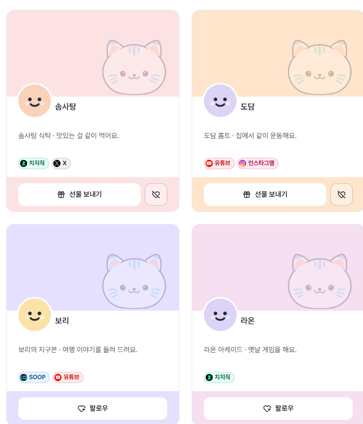
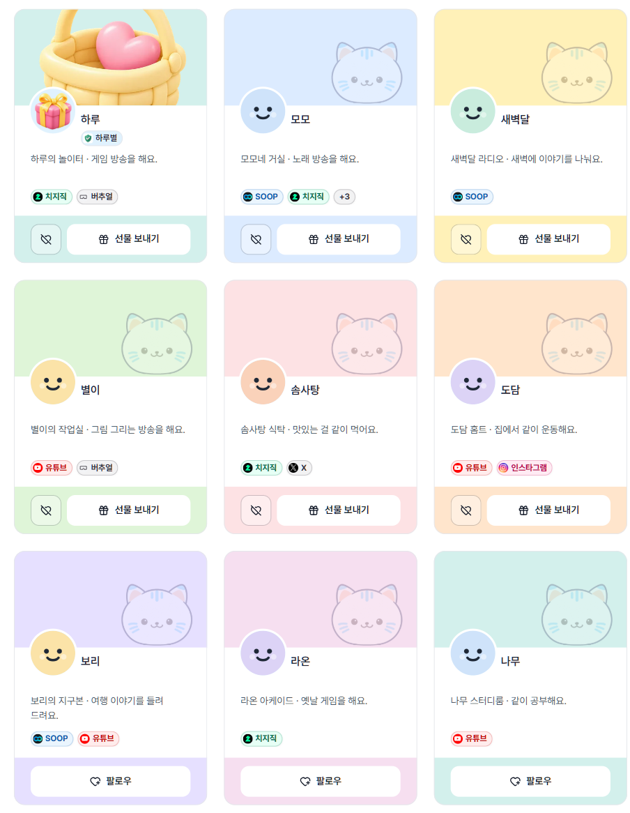
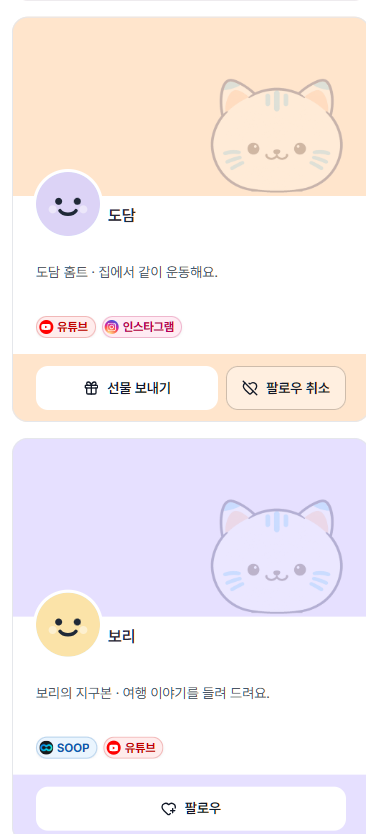
격자 열 수를 화면 폭이 아니라 카드가 놓이는 칸 폭으로 정한다 — 카드 210 이상이 되는 만큼 최대 3열(칸 678 이상 3열 · 444 이상 2열). 로그인 전 880 칸은 3열(277) 그대로, 로그인 뒤 1024 는 왼쪽 메뉴로 칸이 약 690 이라 3열(카드 214). 하한 260 으로 한때 2열이 됐다가 사용자 「원래 3열이었는데 2열로 바뀐 걸 말한 거야」로 210. 좁은 카드에서 이름·팬덤 이름은 「가나다라마…」처럼 말줄임, 「선물 보내기」 글자는 다 보인다. 홈 카드 줄도 같은 기준.
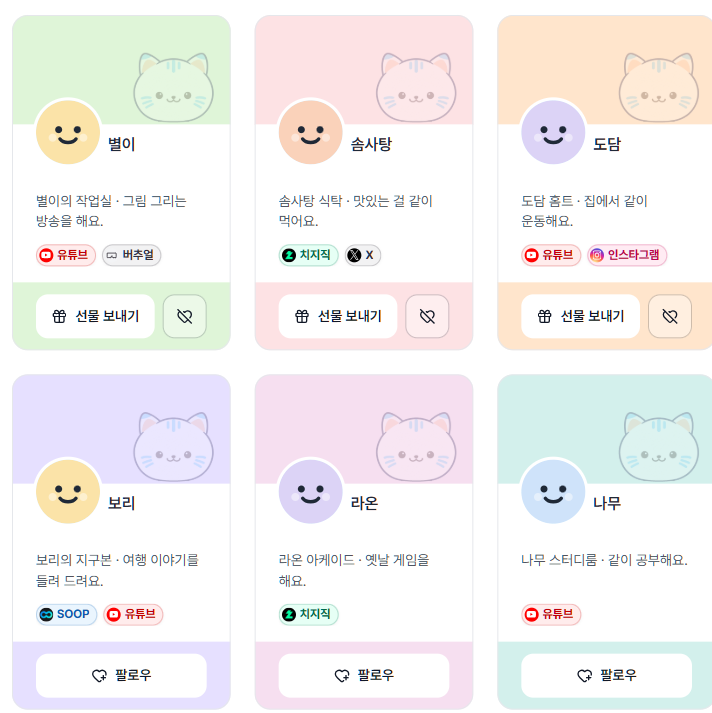